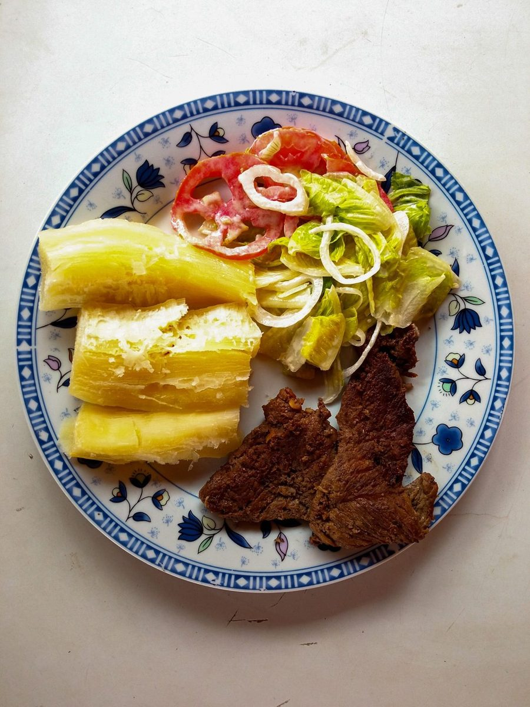

部位 1
屋根の折り込み
お店のことを紹介する、いちばん上の面です。確認できたことだけを載せています。
お店のこと
カフェ「cafeご飯 use」
盛岡市三ツ割にあるカフェです。営業時間・メニュー・席数などの詳しい情報は準備中です。最新の様子はInstagramでご覧いただけます。
このページの内容は、確認できた所在地とInstagramに限っています。今後、お店からいただいた情報で差し替えます。



この部位について
1 屋根の折り込み
上部を山形に折り合わせてつくる、傾いた二つの面。制作側の連想で、お店の理念・由来とは無関係です。
ギャラリー(イメージ)
質感の写真


六つの部位
全体の凡例
- 1屋根の折り込み上部を山形に折り合わせてつくる、傾いた二つの面。
- 2開け口屋根の面を左右に引き開いて、口をつくる部分。
- 3縦の合わせ目胴の一辺を縦に走る、紙を貼り合わせた継ぎ目。
- 4折り罫紙を折るためにあらかじめ付けておく筋。面と面の境になる。
- 5胴四つの面で囲んだ、パック本体の部分。
- 6底の折り込み下側で折り重ねて閉じる、四角い台座の部分。